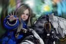

Capcom lo ha vuelto a hacer: Pragmata reinventará los 'shooters' con una mecánica que nadie se esperaba

Hemos tenido que esperar mucho para ver en acción la nueva IP de Capcom, pero parece que Pragmata por fin ha revivido por todo lo alto desde su reaparición en el State of Play de hace unas semanas. A falta de ahondar más en detalle en sus características (algo que seguramente podremos hacer dentro de muy poco gracias a un anunciado Capcom Spotlight), hoy queremos hacer hincapié en una mecánica jugable que ya está confirmada y que va a hacer de este título una auténtica rareza en el mundo de los shooters: la posibilidad de controlar a sus dos protagonistas de forma simultánea.
Ambos personajes tendrán que colaborar juntos
Tras desvelar nuevo gameplay a principios de junio, el director de Pragmata, Cho Yonghee, explicó algunas de las bondades y detalles de su esperado título en el blog de PlayStation. Si nos detenemos a leer su texto, la mecánica del juego que rápidamente llama la atención es que los dos protagonistas de la aventura, Hugh y Diana, van a tener que colaborar juntos para derrotar a una malvada IA y regresar a la Tierra.
Pero este trabajo colaborativo entre los dos personajes no va a ser en absoluto anecdótico. "Ambos tienen sus propias habilidades, y necesitarás controlarlos simultáneamente para superar los numerosos obstáculos que encontrarás", asegura Yonghee. Lo que significa que aquí no hay un único protagonista controlado por el jugador y otro por la IA, sino realmente dos personajes totalmente manejables y con sus propias cualidades.
"Es nuestra visión única del combate, que solo encontrarás aquí".
"Este enfoque dos en uno, donde el hackeo es clave para tu éxito, es nuestra visión única del combate, que solo encontrarás aquí, en Pragmata", recalca Yonghee. ¿Pero a qué se refiere exactamente el director?
Cómo se implementará esta mecánica
De acuerdo con lo visto hasta este momento -y tal y como afirmó Ashley Bardhan en un avance para el portal GamesRadar- parece que los jugadores vamos a poder controlar a Diana con el joystick derecho del mando, de tal manera que la niña podrá resolver una especie de puzles de hackeo para, por ejemplo, desactivar la armadura de los enemigos y que así Hugh pueda eliminarlos.
Pragmata, control simultáneo de los dos protagonistas
Es muy interesante considerar esta clase de control simultáneo. Hasta el día de hoy, no hay muchos juegos en la industria que se hayan atrevido a hacerlo, menos en el campo de los shooters. Las referencias más directas que se nos pueden venir a la mente son el genial Brothers: A Tale of Two Sons, la aventura indie de Josef Fares donde controlamos a dos hermanos al mismo tiempo (uno con cada joystick) o Astral Chain, el hack and slash de PlatinumGames donde también el protagonista y una criatura de apoyo se manejan al unísono.
Sin embargo, más allá de esas menciones (y por evidentes complejidades jugables), el control simultáneo de dos personajes es una característica escasa en el medio. En los shooters se ha dado más frecuentemente el concepto de control indirecto sobre un segundo personaje controlado por la IA. Es decir, títulos donde podemos dar pequeñas órdenes puntuales a un compañero, como el caso de Binary Domain de Sega o Halo 5 Guardians, por mencionar un par.
El propio Resident Evil 0, también de Capcom, nos permite alternar entre Rebecca y Billy en tiempo real para superar ciertos momentos, pero sin duda parece que Pragmata va a ir un paso más allá en este sentido y podría suponer una revolución. ¿Cuánto partido sacará a dicha mecánica? Por ahora es todavía una incógnita, pero a medida que se desvelen nuevos detalles podremos hacernos una mejor idea. Os recordamos que, si todo marcha bien, el juego llegará al mercado por fin el próximo año 2026.